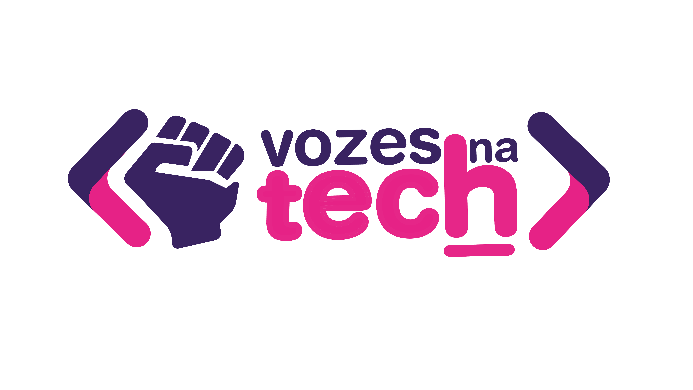

Home
Sobre nós
Teste
LOGIN
Teste Vozes na Tech

* Responda com atenção
* Ao final deste teste, você saberá qual carreira em TI é ideal para você.
1. Você está organizando uma festa e precisa criar um guia com horários de todas as atividades da festa, Como você faria isso?
Montaria um plano flexível, com um conjunto de atividades principais, adaptando-as conforme o ritmo e interesse dos convidados.
Desenharia um mapa da festa, mostrando como as atividades se relacionam nos ambientes.
Criaria um cronograma para garantir que tudo corra conforme planejado.
Utilizaria um app de produtividade, configurando lembretes automáticos e monitorando o progresso das atividades.
Criaria um enredo detalhado, similar a um roteiro de filme, definindo cenas e horários específicos para cada atividade.
Planejaria uma experiência temática, desenhando convites e decorações para envolver os convidados.
2. Você está planejando uma viagem e precisa pesquisar diferentes destinos, levando em consideração o clima, preço, atrações turísticas e avaliações de outros viajantes. Como você organizaria para tomar a melhor decisão ?
Pesquisaria em blogs de viagem e fóruns, criando um diário de viagem virtual com opiniões e experiências coletadas.
Consultaria guias e pacotes turísticos para formar uma visão mais abrangente de cada destino.
Criaria um plano de viagem usando uma ferramenta de gestão, com cronograma e orçamento detalhados.
Criaria uma lista com notas para cada destino, destacando vantagens e desvantagens.
Desenvolveria um mapa interativo onde você pode clicar em cada destino para obter informações detalhadas.
Desenvolveria uma apresentação visual dos destinos com fotos, vídeos e descrições envolventes.
3. Você está em um lugar desconhecido e encontra uma caixa cheia de moedas antigas de diferentes países. Como você descobriria o valor dessas moedas e se elas valem algo atualmente?
Utilizaria um aplicativo de reconhecimento de moedas com inteligência artificial para obter uma identificação e avaliação rápida.
Pesquisaria a história e o contexto das moedas usando livros antigos, visitas a museus e sites especializados para entender seu valor histórico.
Organizaria um projeto de pesquisa detalhado para catalogar e avaliar as moedas.
Levaria as moedas a um especialista em numismática para uma avaliação detalhada e precisa de seu valor no mercado atual.
Participaria de fóruns e comunidades online de colecionadores de moedas, comparando suas descobertas com as de outros colecionadores.
Desenvolveria uma aplicação interativa que permite explorar as moedas e suas histórias.
4. Você é um detetive e precisa desvendar um crime. Como você organizaria as pistas e deduziria o que aconteceu, passo a passo, para solucionar o mistério?
Entrevistaria testemunhas e compararia seus depoimentos minuciosamente, buscando inconsistências e informações cruciais.
Recriaria a linha do tempo dos eventos usando gráficos e recursos visuais, para entender a sequência e o contexto do crime.
Gerenciaria as pistas e a investigação usando um software de organização.
Criaria um sistema de classificação para organizar as pistas por tipo, data e local de coleta, facilitando a análise.
Desenvolveria um diagrama interativo com todas as pistas, conectando-as e destacando padrões e possíveis suspeitos.
Escreveria um relato detalhado dos eventos, ilustrando cada etapa da investigação com imagens e diagramas.
5. Você está liderando uma equipe em um projeto importante. Como você coordenaria a equipe e garantiria que todos estejam alinhados e contribuindo para o sucesso do projeto?
Realizaria reuniões regulares para compartilhar atualizações e resolver problemas em equipe, incentivando a comunicação aberta.
Estabeleceria um sistema de recompensas para incentivar a produtividade e a inovação, reconhecendo as contribuições individuais.
Usaria uma ferramenta de gestão de projetos para definir tarefas, prazos e acompanhar o progresso.
Criaria um dashboard para monitorar o desempenho da equipe, identificando áreas de melhoria e ajustando estratégias conforme necessário.
Desenvolveria uma plataforma colaborativa onde todos podem compartilhar ideias, arquivos e feedbacks em tempo real.
Produziria materiais visuais e gráficos para ilustrar o progresso do projeto e motivar a equipe.
6. Você está participando de um hackathon e precisa criar uma solução inovadora em um curto espaço de tempo. Como você e sua equipe dividiriam as tarefas e desenvolveriam a solução?
Faria uma rápida avaliação das habilidades de cada membro da equipe e distribuiria tarefas conforme suas especialidades.
Criaria um diagrama de fluxo para visualizar a solução final e identificar as etapas necessárias para implementá-la.
Utilizaria uma metodologia ágil para dividir as tarefas em sprints e realizar reuniões diárias de acompanhamento.
Configuraria um sistema de versionamento para que todos possam trabalhar simultaneamente no código, monitorando as alterações.
Desenharia um protótipo funcional para validar a ideia rapidamente, ajustando conforme o feedback recebido.
Criaria uma apresentação visual impactante para demonstrar a solução final aos jurados e investidores.
7. Como um arquiteto, qual é o primeiro recurso tecnologico que você implementaia para garantir segurança e eficiência no projeto de uma casa moderna ?
Avaliaria possíveis pontos de vulnerabilidade na estrutura da casa e implementaria medidas de segurança em cada nível, como sistemas de alarme, câmeras de segurança e fechaduras inteligentes.
Analisaria as tendências de uso de tecnologias modernas e integraria eletrodomésticos inteligentes para gestão de serviços e manutenção da casa, aumentando a segurança e a transparência.
Aplicaria padrões de design reconhecidos para criar uma arquitetura modular e escalável, facilitando futuras expansões e manutenções da casa.
implementaria um sistema de monitoramento contínuo para analisar o desempenho das diversas instalações da casa (elétrica, hidráulica, etc.), identificando e corrigindo gargalos ou problemas antes que se tornem críticos.
Utilizaria um sistema de gestão de projeto digital para coordenar todas as fases da construção, garantindo que cada etapa seja concluída de maneira eficiente e dentro do cronograma.
Criaria um modelo 3D detalhado da casa para visualizar e ajustar o design conforme necessário, otimizando a funcionalidade e o conforto do ambiente
Ver Resultado